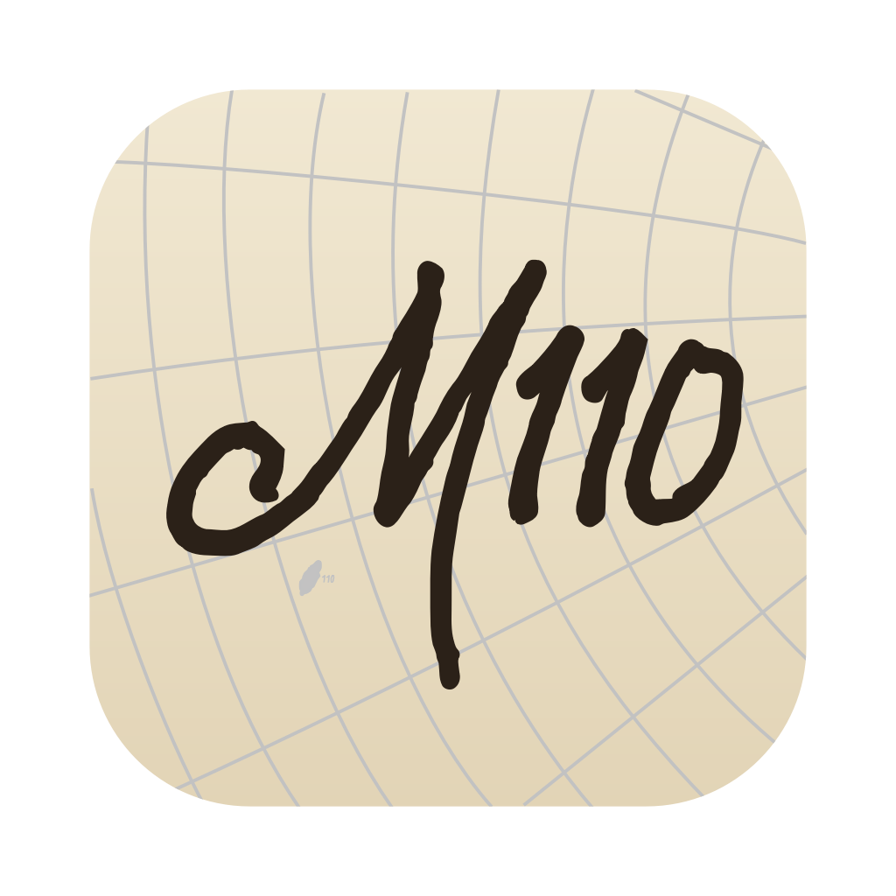
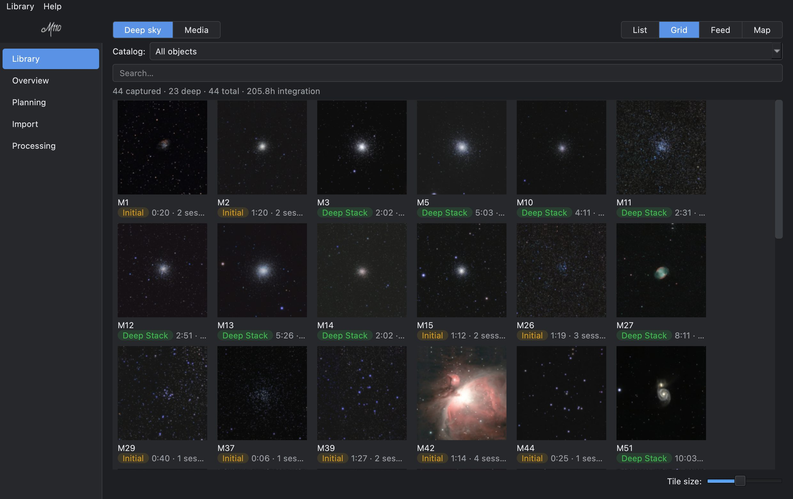
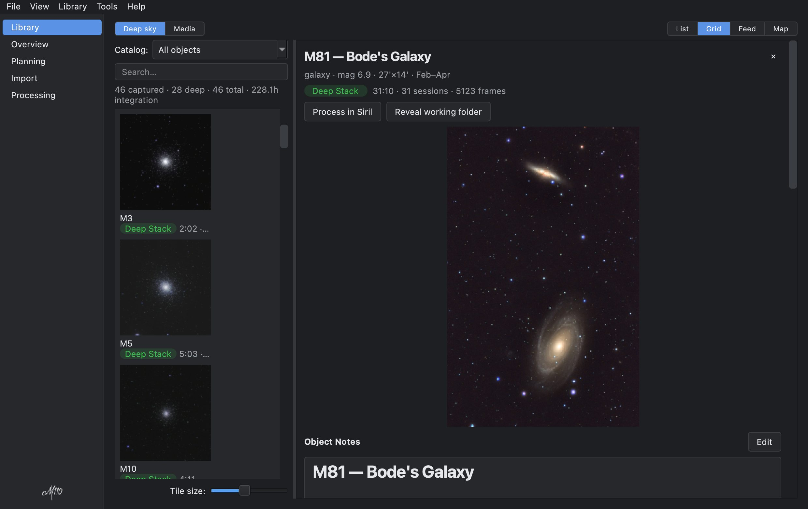
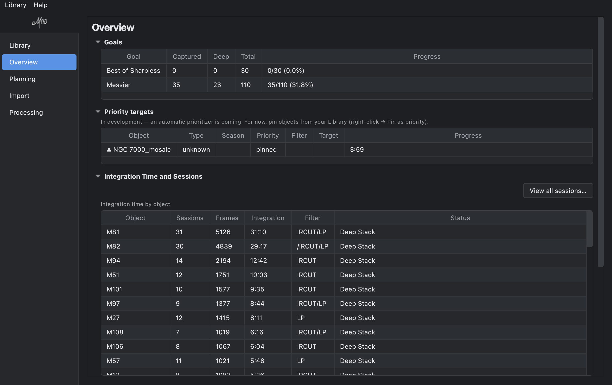

Complete the catalog.
A photo library for your smart telescope. A desktop app that turns a growing pile of Seestar captures into an organized deep-sky library — catalog, capture tracking, ingest, and Siril processing-prep, with a north-star goal to chase.
🔒 It never touches your originals. Ingest is always preview-then-confirm and copies from your telescope — your capture files stay exactly where they are.
Every object you've shot, organized by catalog (Messier, Caldwell, and more) with status, integration time, and a per-object journal.
Point it at your Seestar or a folder; it groups, names, and files your subs, stacks, and finished renders — you preview before anything is written.
Sessions, frames, filters, and integration roll up automatically from your FITS headers, so you always know what's done and what needs another night.
Automatically arranges a clean, contained Siril sandbox per target — lights linked, a tuned preset ready — then imports your finished work back.
Track your progress through a curated catalog, or your own custom goals. See what's up tonight and what's still missing. Named for the 110th and final Messier object.
Local-first, open source, and careful with your data — with built-in, hardlinked backups so an irreplaceable library stays that way.



M110 is free and open source (Apache-2.0). It's early beta software — expect rough edges, and please share what you find.
Signed & notarized · Apple Silicon
Drag M110 to Applications. Opens with no warning.
AppImage · x86_64
Make it executable and run. Needs libfuse2 (or run
with --appimage-extract-and-run).
Installer · x64 · unsigned (beta)
SmartScreen will warn on an unsigned beta: click More info → Run anyway.
M110 is early beta software — feedback and bug reports are hugely helpful. The best place to reach the project is GitHub.